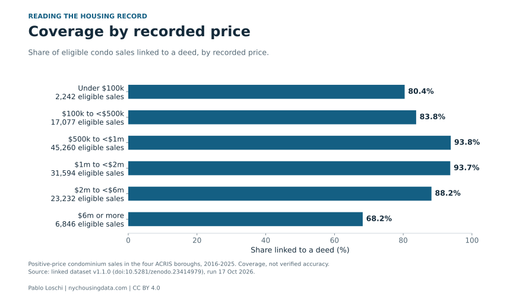
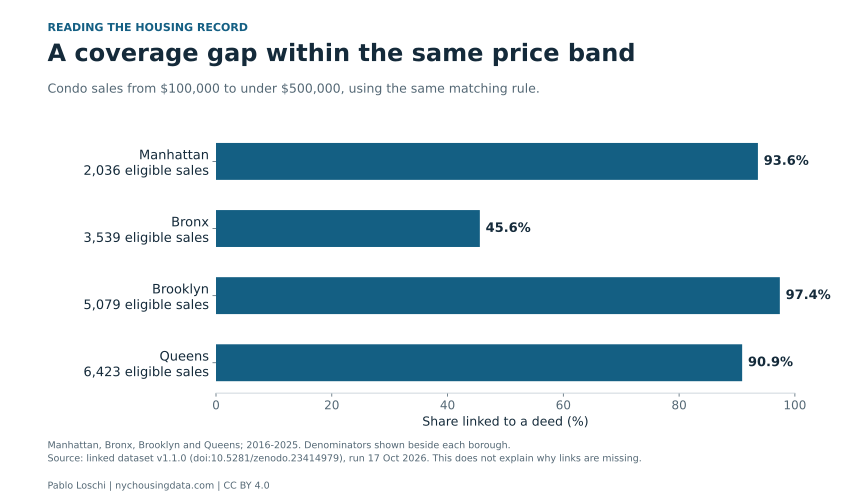

To see who buys condos with cash, you start with a list of sales, find each deed and look for a mortgage. In Brooklyn that works for 24 sales in 25, and in Manhattan for nearly nine in ten. In the Bronx it works for about half, so any study built on the linked records sees much less of the Bronx.
In the current release of the dataset, 88.4% of eligible Manhattan condominium sales link to a deed. In the Bronx, the figure is 51.7%.
Brooklyn reaches 96.1% and Queens 89.7%. All four boroughs use the same rules. A financing comparison drawn only from the linked records therefore starts with uneven coverage, and the borough it sees least is the Bronx.
For this article, I ran the dataset’s published coverage example on the 1.1.0 tables. The exercise covers 126,251 condominium sales with positive recorded prices from 2016 to 2025 in the four boroughs covered by ACRIS, and compares coverage by location, year and price range.


Read the chart data as a table
| Borough | Eligible | Linked | No match | Ambiguous | Linked (%) |
|---|---|---|---|---|---|
| Manhattan | 59,647 | 52,707 | 6,928 | 12 | 88.36 |
| Bronx | 4,311 | 2,230 | 2,023 | 58 | 51.73 |
| Brooklyn | 39,514 | 37,977 | 1,515 | 22 | 96.11 |
| Queens | 22,779 | 20,426 | 2,292 | 61 | 89.67 |
What a missing link means
Of those eligible sales, 113,340 link to a deed. Another 12,758 have no deed that meets the matching rules. For 153, qualifying deeds appear on more than one unit lot, so the result is ambiguous and the sale is left unlinked.
A missing match means the rule found no qualifying deed in this snapshot. A deed may still exist. An ambiguous match means more than one unit qualified, so the rule could not choose one.
Condominiums create a particular join problem. The sales file’s parcel identifier usually points to the building’s billing lot, while deeds and mortgages refer to the individual unit. The linkage searches among unit lots on the same block, using amount and date. When several units qualify, the sales file’s own unit-lot field can pick one; otherwise the sale stays unlinked.
That leaves financing unmeasured for 12,911 eligible condominium sales. A missing link gives no basis for calling those purchases cash.
The Bronx is a small share of sales but a large share of the gaps
The Bronx accounts for 3.4% of eligible condominium sales but 16.1% of the unlinked ones. The unlinked group is also pricier overall: its median recorded price is about $1.18 million, against $990,000 among linked sales, and Manhattan makes up 53.8% of it against 46.5% of linked sales. Any statistic computed from the linked subset weights the boroughs differently from the full eligible sample.
Coverage also varies by price. It is highest, at 93.8%, for sales from $500,000 to under $1 million, and falls to 68.2% at $6 million or more. Sales from $100,000 to under $500,000 reach 83.8%.



Read the chart data as a table
| Recorded price | Eligible | Linked | Linked (%) |
|---|---|---|---|
| Under $100k | 2,242 | 1,803 | 80.42 |
| $100k to <$500k | 17,077 | 14,304 | 83.76 |
| $500k to <$1m | 45,260 | 42,467 | 93.83 |
| $1m to <$2m | 31,594 | 29,601 | 93.69 |
| $2m to <$6m | 23,232 | 20,495 | 88.22 |
| $6m or more | 6,846 | 4,670 | 68.22 |
Year-to-year changes are smaller: the overall linked share ranges from 86.4% to 92.5%. The borough differences persist in every year.
The gap also appears within a price range
Comparing boroughs within the same price range shows that the gap is not a matter of price alone. Among sales recorded from $100,000 to under $500,000, 1,613 of 3,539 Bronx sales link to a deed, or 45.6%. In Manhattan, 1,906 of 2,036 sales in that range link, or 93.6%, and in Brooklyn 97.4%.



Read the chart data as a table
| Borough | Eligible | Linked | Coverage (%) |
|---|---|---|---|
| Manhattan | 2,036 | 1,906 | 93.61 |
| Bronx | 3,539 | 1,613 | 45.58 |
| Brooklyn | 5,079 | 4,947 | 97.40 |
| Queens | 6,423 | 5,838 | 90.89 |
The price ranges do not make the properties or transactions identical, but the borough gap is more than a gap between expensive Manhattan homes and cheaper Bronx ones. The Manhattan coverage rate exceeds the Bronx rate in every year from 2016 to 2025; the annual gap ranges from 30.1 to 43.9 percentage points.
The denominator behind a cash share
In 2021, for example, 10,592 of 15,846 linked condominium sales have a mortgage recorded within the base matching window. That gives a recorded-mortgage share of 66.8% among linked sales. Financing is unmeasured for the other 1,888 eligible sales that year.
The window runs from 15 days before the sale to 90 days afterward. A mortgage found in it still needs instrument-level evidence to establish purchase financing. The 66.8% figure describes a recorded match in the linked subset, not a verified mortgage share for every condominium buyer.
This analysis does not identify why each link is missing, prove that City records are defective or estimate misconduct. It does not supply weights that make the linked subset represent all sales. Staten Island is outside ACRIS, and nonpositive prices are excluded from this linkage comparison.
A borough financing comparison needs both numbers: the share of sales that linked and the mortgage-match rate within that group. Readers can then see how much of the market the comparison covers.
Sources and methods
This article explains Pablo Loschi’s own research. The figures use dataset version 1.1.0, whose condominium rules link more sales than release 1.0.1, used in the first version of this story (1 October 2026: 78.9% in Manhattan, 44.7% in the Bronx). Read the dataset documentation. Dataset v1.1.0 on Zenodo.
The released recorded_mortgage_example.py was run on the 1.1.0 links table and the unchanged sales table on 17 October 2026, and condo_story_v110.py computes the borough, price-band and annual cells and draws the charts. Descriptive counts cover this snapshot; no sampling confidence interval or causal explanation is claimed. Group summary CSV · Annual coverage and mortgage-match CSV · Annual borough gap CSV.
New article text and original graphics: CC BY 4.0. Credit Pablo Loschi, NYC Housing Data; retain the source and sample, and identify edits. Underlying research releases retain their own terms.